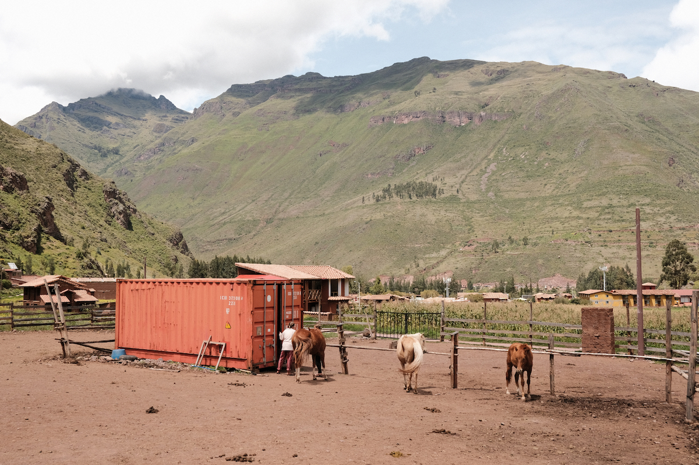
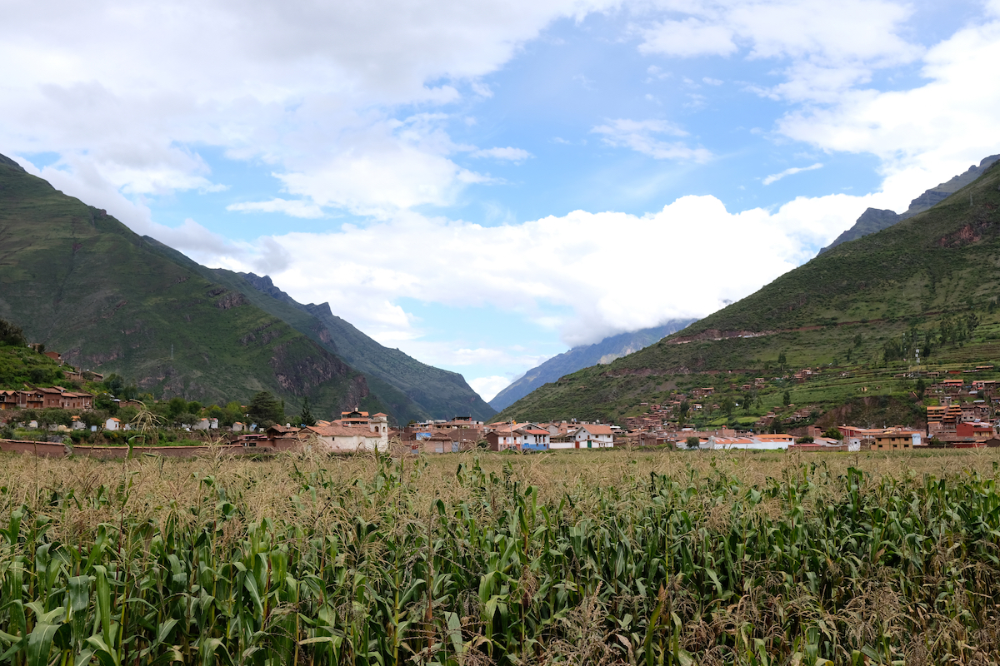

15 March 2022
A week of firsts
“All we have to decide is what to do with the time that is given us”
After 11 hours inside an airplane, crossing the Atlantic and a good portion of South America, I landed in a very foggy early morning Lima but despite the fog, it was already possible to see shapes of mountains around the city. After passing by border and health control, I was already boarding my last flight, destination Cusco.
My first day I saw myself landing at a ~3.400m above sea level Cusco, getting into a Coletivo and experiencing a zig-zag drive through mountains, up and down. The landscape was already breath taking despite the cloudy weather. The final stop was at the local market of the village called Pisac, where the abundance of colours, both in the fruits and vegetables stands but also in the clothing of locals, stood out immediately.
After eating a nice portion of broccoli, cauliflower patties with fried bananas, potatoes and salad I was ready… well, kinda ready, to ride a horse for the first time. Before the horse story, I must share a little detail about me and horses. When I was about 7 or 8 years old, I had a bit of a traumatic experience with horses which made me always keep a distance from them. Now fast forward a couple of decades and here I am, standing inside a large stable with 9 horses walking freely. Here I am brushing their backs, picking up their legs and cleaning their hooves, learning to prepare the saddles and, finally, jumping on their backs for a late afternoon ride through the mountains. We left in a group of 7, riding near rivers, into magical forests, passing by a pack of wild dogs that live in caves and then up to the mountains where we stopped for a while to let horses rest and eat grass and for us to lay back and take in the view and the fresh mountain air.

Riding a horse in real life is definitely not like in Red Dead Redemption 2, and saying you're alright girl? to the horse does not make it any softer when the trotting starts, still, the beautiful connection that happens with the animal, the pure energy coming through their legs all the way up to their backs and than to you, is something really magical and wonderful to experience. When our leader calls for the galloping, the real test starts. Riding on full speed, hugging the horse’s torso tight with your legs and moving your body to the rhythm of the gallop. As scary as it may sound, for a first timer like me, I did not fall into fear but instead into a feeling of pure happiness and utmost freedom.
Besides riding horses, the next days were filled with a lot of walks down to the main village, trying new street foods and the amazing juice mixes from the market, seeing the local ladies walking their alpacas and meeting a lot of foreigners.

Oh, and I almost forgot. I went to a dance. Ecstatic dance, to be more precise. That was another beautiful first time experience for me. Inside a large dome-like building with wooden floor, all the people gathered together sitting on the floor and after the DJ's words, everyone participates in a cacao ceremony, driking a cup of pure hot and local cacao to give energy for the next hours of dancing. When the music takes over, everyone goes into a trance of movements letting their bodies move as it feels like following the music. For me, a mere bedroom dancer, dancing around almost 100 people, free of judgments was a quite freeing and amazing experience.
So many incredible things going on and all in the course of a single week. The views, the people, the energy of this place, the love that is felt all around. What an incredible start of a journey.
And no mountain sickness (yet). Maybe the coca tea helped in the first days.
— Maha